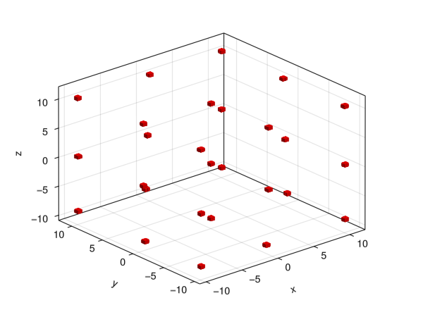

Root Covering
Mathematical Background
Nonlinear optimization theory offers a multitude of algorithms to iteratively approximate roots of functions $h : \mathbb{R}^d \to \mathbb{R}^d$, that is, algorithms $f : \mathbb{R}^d \to \mathbb{R}^d$ such that (under some conditions) $f^k (x) \to x_0$ as $k \to \infty$ with $h(x_0) = \mathbf{0}$. We can consider these algorithms from the point of view of dynamics, and reframe the problem of finding a root of $h$ to finding a fixed point of $f$.
Specifically, we will consider $f$ to be a globalized Newton algorithm. One step of the (local) Newton algorithm follows the specification: solve the linear equation
\[Dh (x) d = - h(x)\]
and set
\[f(x) = x + d, \]
where $Dh (x)$ is the Jacobi matrix of $h$ at $x$.
The local Newton algorithm is not guaranteed to converge to a global solution to $h(x) = 0$. To rectify this, the step size $\| d \|$ and direction $d / \| d \|$ need to be modified. There are multiple heuristics to do this, and GAIO.jl uses the "Armijo rule": fix some $\sigma < 1$ and find the largest $\alpha \leq 1$ such that
\[h(x + \alpha d) - h(x) \leq \alpha \sigma \, Dh (x)^T d.\]
This is done by initializing $\alpha = 1$ and testing the above condition. If it is not satisfied, scale $\alpha$ by some constant $\rho$, ie set $\alpha = \rho \cdot \alpha$, and test the condition again. GAIO.jl uses $\sigma = 10^{-4}$ and $\rho = 4 / 5$.
Using this iterative solver, one can follow a technique very similar to the algorithm for the realtive attractor.
- subdivision step: The box set
Bis subdivided once, i.e. every box is bisected along one axis, which gives rise to a new partition of the domain, with double the amount of boxes. This is saved inB. - selection step: The box set
Bis mapped forward using one step of the adaptive newton algorithm.
If we repeadetly refine the box set B through $k$ subdivision steps, then as $k \to \infty$ the collection of boxes converges to the set of roots of h in the Hausdorff metric.
Example
using GAIO
using LinearAlgebra
# domain (-40,40)^n, 3^n roots in domain
g(x) = 100*x + x.^2 - x.^3 .- sum(x)
function Dg(x) # jacobian
n = length(x)
100*I(n) + 2*Diagonal(x) - 3*Diagonal(x.^2) + ones(n,n)
end
dim = 3
center, radius = zeros(dim), 40*ones(dim)
P = BoxGrid(Box(center, radius))
S = cover(P, :)
R = cover_roots(g, Dg, S, steps=dim*8)
#using Plots # plot a 2D projection
using GLMakie
fig, ax, ms = plot(R);
Implementation
function cover_roots(g, Dg, B₀::BoxSet{Box{N,T}}; steps=12) where {N,T}
# B₀ is a set of `N`-dimensional boxes
B = B₀
domain = B.partition.domain
for k in 1:steps
B = subdivide(B, (k % N) + 1) # cycle through dimesions for subdivision
f(x) = adaptive_newton_step(g, Dg, x, k)
F = BoxMap(f, domain) # define a BoxMap which performs one newton step
B = F(B) # map the set forward along the newton step
end
return B
endGAIO.cover_roots — Functioncover_roots(g, Dg, B::BoxSet; steps=12) -> BoxSetCompute a covering of the roots of g within the partition P. Generally, B should be a box set containing the whole partition P, ie B = cover(P, :), and should contain a root of g.
GAIO.adaptive_newton_step — Functionadaptive_newton_step(g, g_jacobian, x, k=1)Return one step of the adaptive Newton algorithm for the point x.
GAIO.armijo_rule — Functionarmijo_rule(g, Dg, x, d, σ=1e-4, ρ=0.8, α₀=0.05, α₁=1.0)Find a step size multiplier $\alpha \in (\alpha_0, \alpha_1]$ such that
\[g(x + \alpha d) - g(x) \leq \alpha \sigma \, Dg(x) \cdot d\]
This is done by initializing $\alpha = 1$ and testing the above condition. If it is not satisfied, scale $\alpha$ by some constant $\rho < 1$ (i.e. set $\alpha = \rho \cdot \alpha$), and test the condition again.